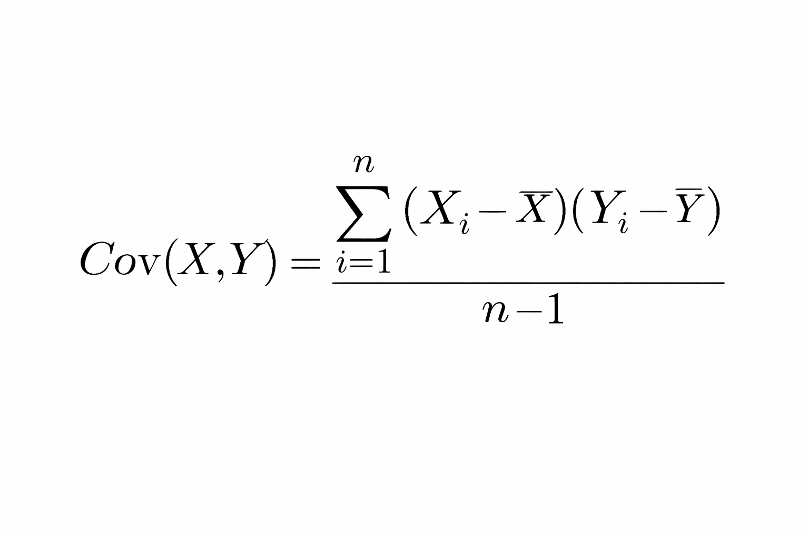
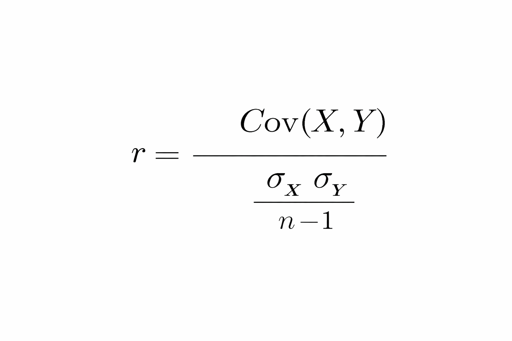

Machine Learning (ML)
Machine Learning is a subset of AI where systems learn patterns from data instead of being explicitly programmed.
Definition:
ML is a method of data analysis that automates analytical model building using algorithms that learn from data.
Field of study that gives computers the ability to learn without being explicitly programmed.
A computer program is said to learn from experience E with respect to some task T and some performance measure P, if its performance on T, as measured by P, improves with experience E.
Artificial Intelligence (AI)¶
Artificial Intelligence (AI) is the broader field of building systems that can perform tasks that normally require human intelligence.
Examples:
Speech recognition
Image recognition
Decision-making systems
Self-driving cars
Types of Machine Learning¶
Supervised Learning
Data is labeled
Has input (X) and output (Y)
Examples:
Linear Regression
Logistic Regression
Decision Trees
Unsupervised Learning
No labeled output
Only input data
Examples:
K-Means Clustering
Hierarchical Clustering
PCA
Supervised Learning → Regression¶
Regression is used when:
✅ Target variable is numeric
Example:
Insurance premium
Sales
Returns
Temperature
Business Problem¶
Problem: Predict vehicle insurance premium.
Target variable:
Insurance Premium (Y)
Independent variables:
Age, Mileage, Engine Capacity, Condition, Manufacturer
Basic Terminology¶
Dependent Variable (Target Variable)
Variable to be predicted
Denoted by Y
Example:
Insurance Premium
Independent Variable (Predictor Variable)
Variables used to predict Y
Denoted by X
Example:
Mileage, Age, Engine Capacity
Statistical Basics¶
Covariance
Measures how two variables move together.
Covariance is a measure of how changes in one variable are associated with changes in another variable.
Formula:

Interpretation:
Positive → Move together
Negative → Move opposite
Zero → No linear relationship
Pearson Correlation Coefficient
Scaled version of covariance.

Range: -1 ≤ r ≤ 1
+1 : Perfect positive
-1 : Perfect negative
0 : No linear relationship
Regression Analysis¶
Definition:
Regression analysis studies the relationship between dependent and independent variables.
Purpose:
Identify important predictors
Quantify impact
Predict values
Types of Association¶
Association
│
├── Linear
├── Non-Linear
└── No Relationship
Simple Linear Regression (SLR)¶
Used when:
One independent variable
Linear relationship
Model Equation
Premium = β0 + β1 (Mileage) + ε
Error Term (Residual)¶
Error Term
ε = Y actual − Y predicted
Squared Error
ε2 = (Y actual − Y predicted ) **2
Sum of Squared Errors
SSE = ∑ε**2
Ordinary Least Squares (OLS)¶
The OLS method aims to minimize the sum of the squared difference between the actual and predicted values.
Error Function
E = ∑ ( Y − ( β0 + β1X ) )**2
Durbin-Watson test - It is used to check autocorrelation
Test statistic is near to 2 : No correlation
b/w 0 and 2 : Positive correlation
2 and 4 : negative correlation
Jarque-Bera test - It is used to check normality of residuals
Using P-value - P < 0.05 - Not normal
Condition Number - Used to check the multicollinearity
If CN < 100 : No multicollinearit
If CN b/w 100 and 200 : Moderate multicollinearit
If CN >1000 : Severe multicollinearit
✅ Multicollinearity
Multicollinearity occurs when independent variables are highly correlated with each other.
It makes coefficient estimates unstable and reduces the reliability of interpreting individual predictor effects.
✅ Autocorrelation
Autocorrelation occurs when error terms are correlated with each other, usually across time.
It violates the independence assumption of regression and can lead to misleading statistical results.
✅ Variance Inflation Factor (VIF)
VIF (Variance Inflation Factor) measures how much the variance of a regression coefficient is inflated due to multicollinearity.
It is used to detect the presence of Multicollinearity
VIF = 1/(1-R-Square)
VIF > 5 : High correlation
VIF b/w 1 to 5 : Moderate correlation
VIF = 1 : No correlation
Estimated Model¶
Premium=327.0860−11.6905×Mileage
Interpretation
$\beta_0 = 327.086$ → Premium when mileage = 0
$\beta_1 = -11.6905$ → Premium decreases by 11.69 per unit increase in mileage
Measures of Variation¶
Total Sum of Squares (SST)
SST = ∑ (Yi − Yˉ )**2
Sum of Squares Regression (SSR)
SSR = ∑ ( Y^i − Yˉ )**2
Sum of Squares Error (SSE)
SSE = ∑ ( Yi − Y^i )**2
> SST = SSR + SSE
R-Squared (Coefficient of Determination)¶
The coefficient of determination explains the percentage of variation in the dependent variable that the independent variables explains collectively.
R2 = SST / SSR
OR
R2 = 1 − SST / SSE
In python : r_sq = SLR_model.rsquared
Range : 0 ≤ R 2 ≤ 1
Limitations of R2
Always increases when new predictors are added
Can lead to overfitting
Adjusted R²¶
Adjusted R² measures the proportion of variance explained by the model, adjusted for the number of predictors used.
Unlike R², it only increases if a new variable improves the model significantly, helping prevent overfitting.
R2 adj = 1 - ( SSE / ( n − k − 1 ) / SST / ( n - 1 ) )
n = sample size
k = number of predictors
Assumptions of Linear Regression¶
Before building model:
Target must be numeric
No multicollinearity
After building model:
Linear relationship
Homoscedasticity
No autocorrelation
Errors normally distributed
🔹 Major Python Libraries
import numpy as np
import pandas as pd
import matplotlib.pyplot as plt
import seaborn as sns
from sklearn.linear_model import LinearRegression
from sklearn.metrics import r2_score, mean_squared_error
🔹 Simple Linear Regression Code
from sklearn.linear_model import LinearRegression
X = df[['Mileage']]
y = df['Premium']
model = LinearRegression()
model.fit(X, y)
print("Intercept:", model.intercept_)
print("Slope:", model.coef_)
🔹 Multiple Linear Regression Code
X = df[['Mileage', 'Engine_Capacity', 'Age']]
y = df['Premium']
model = LinearRegression()
model.fit(X, y)
print("Intercept:", model.intercept_)
print("Coefficients:", model.coef_)
1️⃣ Feature
Definition
A feature (or attribute) is an independent variable that acts as input to a model.
Dataset columns (except target) are called features.
Target variable is the dependent variable.
Example:
Product ID, Store, City → Features
2️⃣ Feature Extraction
Feature Extraction includes:
Feature Transformation
Feature Engineering
Feature Selection
3️⃣ Feature Transformation
Definition
Feature transformation means replacing an existing feature with a mathematical function of that feature.
Example:
X → log(X)
X → √X
X → 1/X
Why Do We Need Feature Transformation?
To reduce skewness
To satisfy assumptions of Linear Regression
To linearize non-linear relationships
To make data approximately normally distributed
Important Rule ⚠️
Model comparison should always be done using the original target variable scale, not the transformed scale.
4️⃣ Assumption of Normality
Parametric methods assume:
Data follows a normal distribution
Sample statistics represent population properly
Therefore:
It is preferable for features to be approximately normally distributed.
5️⃣ Transformation Methods
1️⃣ Logarithmic Transformation
Definition
Replace variable with natural log:
X → ln(X)
Used When:
Data is positively skewed
Relationship is multiplicative (Y = mX^k)
Cannot Be Used When:
X has zero or negative values
Dummy variables (ln(0) undefined)
2️⃣ Square Root Transformation
X → √X
Used When:
Reduce right skewness
Data contains zero values
Can handle zero, but not negative values.
3️⃣ Reciprocal Transformation
X → 1/X
Used When:
Strong right skewness
Cannot Be Used When:
X = 0
Can handle negative values.
Example:
Population density → Area per person
4️⃣ Exponential Transformation
X → exp(X)
Used to reverse logarithmic transformation.
5️⃣ Box-Cox Transformation
Generalized form of transformation:
Uses parameter λ (lambda)
Works only for positive values
λ is tuned based on data
More flexible than log transformation.
6️⃣ Feature Scaling
Definition
Feature scaling transforms features into a common scale.
Why Is It Needed?
ML algorithms use distance calculations
Features with large magnitude dominate smaller ones
Example:
Age: 18–65
Income: 10,000–1,00,000
Income will dominate without scaling.
7️⃣ Feature Scaling Methods
1️⃣ Normalization (Min-Max Scaling)
Rescales values to:
0 to 1
Formula:
X_scaled = (X - min) / (max - min)
Use When:
Distribution is unknown
Data is not Gaussian
2️⃣ Standardization (Z-score Scaling)
Rescales to:
Mean = 0
Standard deviation = 1
Formula:
X_scaled = (X - μ) / σ
Use When:
Data is approximately Gaussian
Outliers are important
Normalization vs Standardization
| Feature | Normalization | Standardization |
|---|---|---|
| Range | 0 to 1 | Mean = 0, SD = 1 |
| Sensitive to Outliers | Yes | Less |
| Assumes Gaussian Distribution | No | Yes (preferred) |
8️⃣ Feature Selection
Definition
Feature selection means selecting only significant features for the model.
Methods
Forward Selection
Backward Elimination
Stepwise Regression
Recursive Feature Elimination (RFE)
9️⃣ Forward Selection
Procedure
Start with null model (no predictors)
Add most correlated variable
Check significance
Continue adding significant variables
Stop when no more improvement
🔟 Backward Elimination
Procedure
Start with full model (all predictors)
Remove variable with highest p-value
Refit model
Repeat until all variables are significant
1️⃣1️⃣ Stepwise Regression
Combination of:
Forward selection
Backward elimination
At each step:
Add or remove variable based on p-value
1️⃣2️⃣ Recursive Feature Elimination (RFE)
Procedure:
Train full model
Rank features
Remove least important feature
Refit model
Repeat
🔹 Regularization
What is Regularization?
Regularization is a technique used to:
Prevent overfitting
Reduce model complexity
Penalize large coefficients
It adds a penalty term to the loss function.
1️⃣ Ridge Regression (L2 Regularization)
Adds penalty:
λ ∑ β 2
Key Points:
Shrinks coefficients toward zero
Does NOT make coefficients exactly zero
Keeps all features in the model
Reduces variance
When to Use:
When most features are useful
When multicollinearity exists
2️⃣ Lasso Regression (L1 Regularization)
Adds penalty:
𝜆 ∑ ∣ 𝛽 ∣ λ ∑ ∣ β ∣
Key Points:
Shrinks coefficients
Can make some coefficients exactly zero
Performs automatic feature selection
Produces sparse models
When to Use:
When many features are irrelevant
When feature selection is required
1️⃣3️⃣ Optimization
Optimization includes:
Prediction Evaluation
Model Validation
Fine Tuning
1️⃣4️⃣ Prediction Evaluation
Prediction errors depend on:
Bias
Variance
1️⃣5️⃣ Bias
Bias = Difference between predicted values and true values.
High bias:
Model too simple
Underfitting
Low variance
Example:
Straight line fitting curved data
1️⃣6️⃣ Variance
Variance = Model sensitivity to training data.
High variance:
Model too complex
Overfitting
Low bias
Example:
Curve perfectly fitting training data but poor test performance
1️⃣7️⃣ Bias-Variance Tradeoff
| Model Type | Bias | Variance | Problem |
|---|---|---|---|
| Simple | High | Low | Underfitting |
| Complex | Low | High | Overfitting |
Goal:
Find balance between bias and variance.
1️⃣8️⃣ Model Validation
Used to validate model performance on unseen data.
Cross Validation Methods
Two-Fold Cross Validation
K-Fold Cross Validation
LOOCV
1️⃣9️⃣ Two-Fold Cross Validation
Split data into 2 equal parts
Train on one, test on other
Swap
Sum errors
2️⃣0️⃣ K-Fold Cross Validation
Procedure:
Split dataset into k subsets
Use one subset as test
Train on remaining k-1
Repeat k times
Average error
Common choice:
k = 5 or 10
2️⃣1️⃣ LOOCV (Leave One Out Cross Validation)
Special case of k-fold:
k = n (number of observations)
One observation used as test each time
n runs
Disadvantage:
High variance
Train-Test Split Ratio¶
Train-test split is used to evaluate model performance on unseen data.
| Training Data | Testing Data | When to Use |
|---|---|---|
| 80% | 20% | Large datasets |
| 70% | 30% | Medium datasets |
| 90% | 10% | Very large datasets |
🔹 Evaluation Metrics (Regression)
Used to measure prediction error.
1️⃣ MSE (Mean Squared Error)
MSE=n1∑(y−y^)2
Penalizes large errors heavily
Lower is better
2️⃣ RMSE (Root Mean Squared Error)
RMSE = square root (MSE)
Same unit as target variable
Easier to interpret than MSE
Lower is better
3️⃣ MAE (Mean Absolute Error)
MAE=n1∑∣y−y^∣
Less sensitive to outliers
Measures average absolute error
Lower is better
4️⃣ R² (R-Squared)
R2= 1 − (SS_res/SS_tot)
Where:
SS_res = Sum of squared residuals
SS_tot = Total sum of squares
Interpretation:
0 → Model explains nothing
1 → Perfect model
Can be negative if model performs worse than mean
1️⃣ Gradient Descent
What is Gradient Descent?
Gradient Descent is an optimization technique used to:
Minimize the cost function
Find optimal model parameters
Iteratively update parameters
It takes:
Large steps when far from optimum
Small steps near optimum
2️⃣ Cost Function
What is a Cost Function?
A cost function measures how well the model performs.
For Linear Regression:
Cost Function (J) = Σ (y_actual - y_predicted)^2
Also called:
Loss Function
Error Function
Goal:
Minimize this value.
3️⃣ Gradient Descent Update Rule
Parameter update rule:
New Parameter = Old Parameter - (Learning Rate × Derivative of Cost Function)
Where:
Learning Rate = α
Derivative = slope of cost function
4️⃣ Learning Rate (α)
Definition
Learning rate (α) is a hyperparameter that controls step size.
Effect of Learning Rate¶
| Learning Rate | Effect |
|---|---|
| Very High | May skip optimal solution |
| Very Low | Very slow convergence |
| Proper Value | Fast and stable convergence |
5️⃣ Gradient Descent Procedure
-
Initialize parameters (β0, β1, ...)
-
Compute cost function
-
Compute derivative
-
Update parameters
-
Repeat until convergence
Convergence occurs when derivative ≈ 0.
6️⃣ Types of Gradient Descent
1️⃣ Batch Gradient Descent
Uses entire dataset
Stable convergence
Computationally expensive
2️⃣ Stochastic Gradient Descent (SGD)
Uses one sample at a time
Faster for large datasets
Noisy updates
Works well for large-scale data
3️⃣ Mini-Batch Gradient Descent
Uses small group of samples
Combination of Batch & SGD
Faster and stable
Comparison Table
| Type | Data Used per Update | Speed | Stability |
|---|---|---|---|
| Batch GD | Entire dataset | Slow | Very Stable |
| SGD | One sample | Very Fast | Noisy |
| Mini-Batch GD | Small batch | Fast | Balanced |
7️⃣ Underfitting & Overfitting
Underfitting
Model too simple
High Bias
Low Variance
Overfitting
Model too complex
Low Bias
High Variance
Poor generalization
8️⃣ Generalization Error
If:
Training error low
Test error high
→ Model is overfitting
Goal:
Minimize generalization error.
9️⃣ Regularization
What is Regularization?
Regularization reduces overfitting by:
Adding penalty to cost function
Shrinking coefficients
Controlling model complexity
Regularized Loss Function
Loss_regularized = OLS Loss + Penalty Term
🔟 Regularization Parameter (λ)
λ controls strength of penalty.
λ Value Effect
0 No regularization
Small Slight shrinkage
Large Strong shrinkage
Best λ is chosen using cross-validation.
1️⃣1️⃣ Types of Regularization
1️⃣ Ridge Regression (L2 Regularization)
Penalty:
Penalty = λ Σ (β^2)
Properties:
Shrinks coefficients
Does NOT make them zero
Reduces variance
2️⃣ Lasso Regression (L1 Regularization)
Penalty:
Penalty = λ Σ |β|
Properties:
Shrinks coefficients
Can make coefficients exactly zero
Performs feature selection
3️⃣ Elastic Net Regression
Combination of Ridge + Lasso
Loss = Σ(y - y_pred)^2
+ λ_ridge Σ(β^2)
+ λ_lasso Σ|β|
1️⃣2️⃣ Ridge vs Lasso vs Elastic Net
| Method | Penalty Type | Can Make Coefficient Zero? | Use Case |
|---|---|---|---|
| Ridge | L2 | No | When all features important |
| Lasso | L1 | Yes | When feature selection needed |
| Elastic Net | L1 + L2 | Yes | When many correlated features |
1️⃣3️⃣ Feature Scaling Before Regularization
Regularization penalizes large coefficients.
Therefore:
Features must be scaled before applying regularization.
If data is not Gaussian → Use Min-Max Scaling
If Gaussian → Use Standardization
1️⃣4️⃣ RMSE Comparison (Example from Slides)
| Model | Train RMSE | Test RMSE | Conclusion |
|---|---|---|---|
| Least Squares | 0.2315 | 0.3139 | Overfitting |
| Lasso | 0.2776 | 0.2754 | Better Generalization |
| Elastic Net | 0.2776 | 0.2754 | Better Generalization |
1️⃣5️⃣ When to Use Which Regularization?
Use Ridge → When all predictors important
Use Lasso → When useless predictors exist
Use Elastic Net → When many predictors & correlation exists
1️⃣6️⃣ Occam’s Razor
When faced with two equally good hypotheses, choose the simpler one.
Regularization follows this principle.
1️⃣7️⃣ Hyperparameters
What is a Hyperparameter?
A parameter set manually before training.
Examples:
Learning rate (α)
Regularization parameter (λ)
1️⃣8️⃣ Grid Search
What is Grid Search?
Grid Search is used to:
Tune hyperparameters
Try multiple combinations
Select best performing pair
Grid Search Procedure
-
Define range of hyperparameters
-
Create grid of combinations
-
Perform k-fold cross validation
-
Compute performance metric
-
Select combination with best performance
Example
If:
λ = [0.1, 0.5, 1.0]
α = [0.01, 0.1, 0.5]
GridSearch tries all combinations and selects best.
📌 Summary Flow
AI
└── ML
├── Supervised
│ ├── Regression
│ │ ├── Simple Linear Regression
│ │ └── Multiple Linear Regression
│ └── Classification
└── Unsupervised